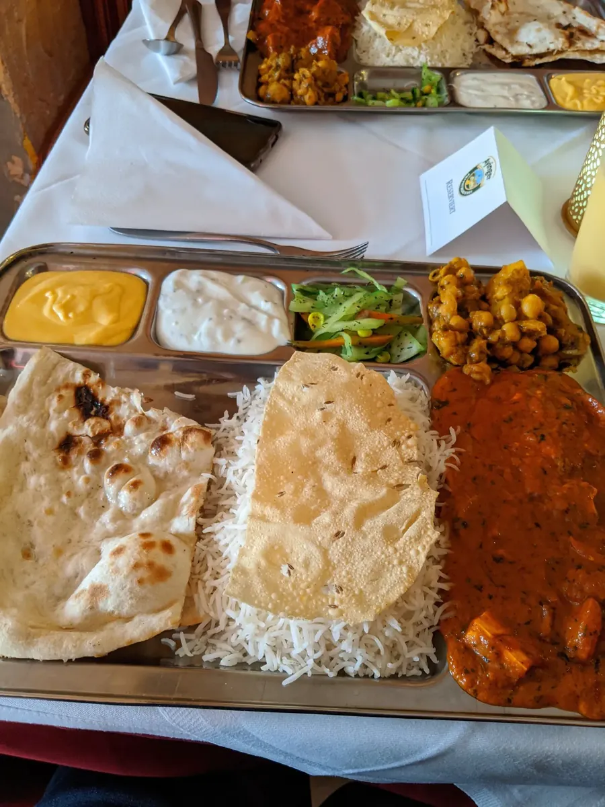
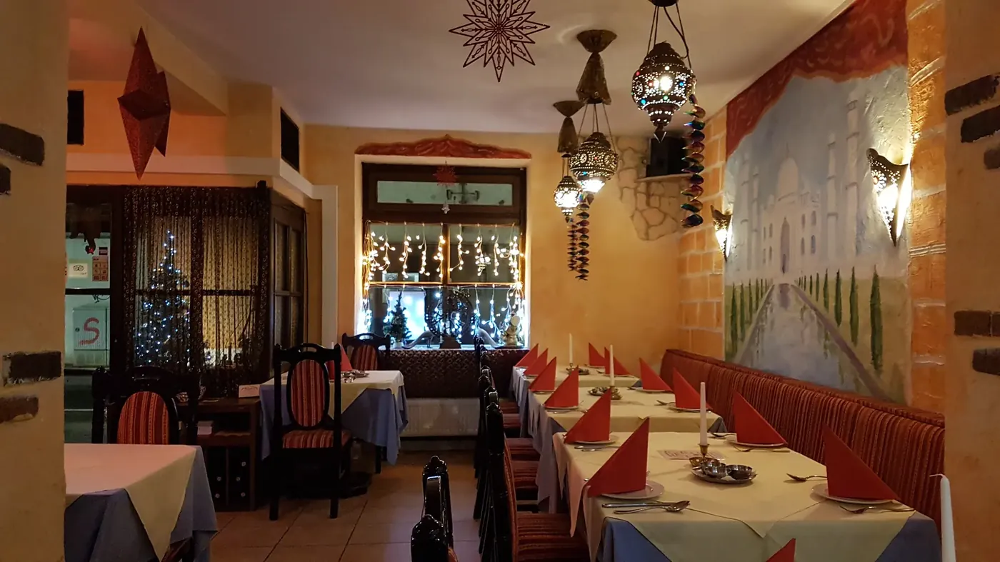

Bombay, indisches Restaurant in Freising
Indisch essen, mitten in der Freisinger Altstadt.
Tandoori und Naan aus dem Holzkohle-Lehmofen, Currys mit bis zu 13 selbst gemischten Gewürzen. Jedes Gericht so scharf, wie Sie es mögen.
Abholung ca. 30 Min.Lieferung ca. 60 Min.Obere Hauptstraße 67

Typische Gewürze der indischen Küche: KurkumaKreuzkümmelKorianderKardamomNelkeZimtSenfsaatChiliGaram Masala
Die Lieblinge des Hauses
Neun Gerichte, die das Bombay am liebsten zeigt. Wählen Sie eines, stellen Sie die Schärfe ein und legen Sie es auf Ihren Merkzettel.
Was in der Küche passiert
- Tandoor
- Tandoori-Gerichte, Naan und Gemüse kommen aus dem Lehmofen, befeuert mit Holzkohle. Darin entsteht die rauchige Kruste, die keine Pfanne schafft.
- 13 Gewürze
- Die Currymischungen stellt die Küche aus frischen Gewürzen selbst her, bis zu dreizehn in einer Soße.
- Vier Schärfen
- Mild, pikant, scharf oder sehr scharf: jedes Gericht wird so gewürzt, wie Sie es bestellen.
- Ohne Fleisch
- Zwanzig vegetarische Hauptgerichte, viele davon auf Wunsch vegan.
Was passt heute zu mir?
Drei Fragen, ein Vorschlag aus 141 Gerichten. Ideal, wenn Sie die indische Küche zum ersten Mal probieren oder einfach nicht wissen, worauf Sie Lust haben.

Willkommen im Bombay
- Das Taj Mahal an der Wand
- Rote Polsterbänke, weiß gedeckte Tische
- Sternlaternen über jedem Tisch
- Im Sommer: unsere Terrasse
Gedeckt im Bombay
Fotos unserer Gäste. Tippen Sie für die Großansicht.
Die ganze Karte
141 Gerichte und Getränke, mit Nummern wie im Restaurant. Jedes Gericht gibt es mild, pikant, scharf oder sehr scharf. Preise in Euro inkl. MwSt.
Ihr Tisch im Bombay
Wählen Sie Personen, Tag und Uhrzeit. Am Ende rufen Sie uns an oder schicken die fertige Anfrage per E-Mail.
| Montag | 11:30–14:00 · 17:30–22:00 |
|---|---|
| Dienstag | Ruhetag |
| Mittwoch | 11:30–14:00 · 17:30–22:00 |
| Donnerstag | 11:30–14:00 · 17:30–22:00 |
| Freitag | 11:30–14:00 · 17:30–22:00 |
| Samstag | 11:30–14:00 · 17:30–22:00 |
| Sonntag | 11:30–14:00 · 17:30–22:00 |
Abholung und Lieferung zu denselben Zeiten.
Gäste geben 4,5 von 5 Sternen
bei über 400 Bewertungen im Google-Unternehmensprofil, Stand Oktober 2026.
„Sehr gutes Essen, kurze Wartezeiten, Bedienung sehr freundlich und zuvorkommend.“
„Sehr schmackhafte, günstige und reichhaltige Gerichte zum Mittagstisch.“
„Die Hauptspeise besaß genügend Reis für die Fleisch- und Soßenportion.“
Auszüge aus Google-Bewertungen, ohne Namen.
So finden Sie uns
Restaurant BombayObere Hauptstraße 67
85354 Freising
Mitten in der Altstadt, wenige Schritte vom Marienplatz. Parkhäuser in der Innenstadt, vom Bahnhof etwa zehn Minuten zu Fuß.
Der Eingang ist leider nicht rollstuhlgerecht. Sprechen Sie uns an, wir helfen gern.
Lieber zu Hause?
Bestellen Sie direkt bei uns zum Abholen (ca. 30 Minuten) oder Liefern (ca. 60 Minuten). Ohne Umweg über Plattformen.
Online bestellen